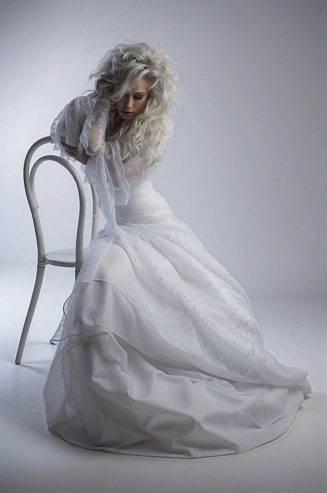
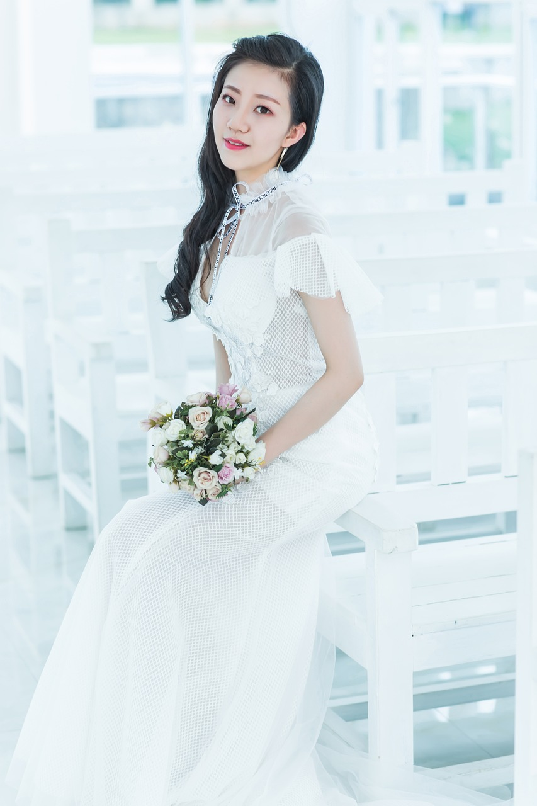

Dress Collection
― 永遠に輝く、花嫁のためのドレス ―
私たちのドレスコレクションは、花嫁の人生で最も特別な瞬間を、何よりも美しく輝かせるために生まれました。フランスやイタリアをはじめとするヨーロッパの一流メゾンから選び抜いた上質な素材を使用し、シルクやサテン、繊細なチュール、緻密に編まれたレースなど、それぞれの質感が持つ美しさを最大限に引き出しています。ドレスのデザインは、時を超えて愛されるクラシカルなスタイルから、モダンで洗練されたシルエットまで多彩に展開。どの一着にも、熟練した職人の手仕事と美意識が息づき、一針一針に花嫁を想う心が込められています。動くたびに光が柔らかく反射し、レースの陰影が肌を優しく包み込む。その瞬間ごとに生まれる美しさは、まるで芸術のよう。花嫁の内側から溢れる幸福感を、上品に、そして永遠に表現する一着です。あなたの人生でたったひとつの特別な日を、このドレスが、永遠に記憶に残る輝きで包み込みます。
月光に照らされた庭をイメージした、幻想的なドレス。柔らかく広がるシルエットが、夜の静けさの中に咲く花のような美しさを演出します。
Jardin de Lune（ジャルダン・ド・リュヌ）¥1,050,000（税込）
純白のサテンがボディラインに美しく寄り添う、タイムレスな一着。無駄を削ぎ落としたシルエットが花嫁の自然な美しさを際立たせ、歩くたびに柔らかな光沢が揺らめきます。
Blanche Élégance（ブランシュ・エレガンス）¥890,000（税込）
「ガラスの涙」を意味するドレス。透明なビーズ刺繍を全面に施し、動くたびに光がきらめく。アートピースのような存在感を放ちます。
Larmes de Verre（ラルム・ド・ヴェール）¥1,080,000（税込）
「時を超える花」。クラシカルなデザインに、現代的なディテールを融合。ヴィンテージレースと柔らかなチュールが織りなす、永遠のエレガンス。
Fleur du Temps（フルール・デュ・タン）¥980,000（税込）
静寂の中に響く美。無音の世界を表現するために、装飾を最小限に抑えたシルクドレス。ミニマルでありながら圧倒的な存在感を放ちます。
Écho du Silence（エコー・デュ・シランス）¥1,200,000（税込）

月明かりを思わせる上品な光沢のサテン生地が、ボディラインを美しく包み込むオフショルダードレス。デコルテを優雅に見せるカッティングと、背中の流れるようなラインが繊細でロマンティックな印象を与えます。
Clair de Lune（クレール・ド・リュヌ）¥1,050,000（税込）
― Real Brides Collection ―

